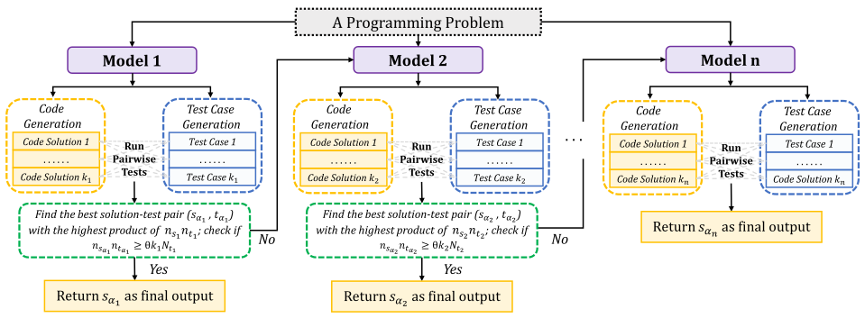
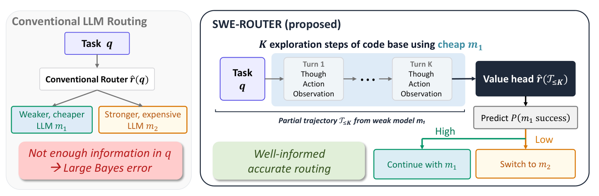

Routing LLM calls: predict the model, or verify the answer?
Date: October 2026 | Estimated reading time: 8 min | Author: Shuhui Qu
The same request can cost a hundred times more on one model than on another, and the expensive model is not always
the one that gets it right. Two strategies try to pay only for what a request needs. A router decides
before the call: it reads the prompt and predicts which model should answer. A cascade decides
after: it lets a cheap model answer first, checks the answer, and calls a stronger model only if the check
fails. This post reviews both families in the 2023–2026 literature, what generalizes and what does not, and
where my gateway Rung (now Honeyguide) differs. (For how Rung is built and used, see
this post.)
A router is a classifier over prompts. It is trained on records of which model did well on which request, and at
run time it maps a new prompt to a model, usually with a threshold that trades cost against quality.
Preference-trained routers. RouteLLM trains strong-versus-weak routers on Chatbot Arena preferences and
routes when the predicted win probability of the weak model is high enough; it reports 3.66× cost savings at
95 % of GPT-4's quality on MT Bench (Ong et al. 2024). Hybrid LLM predicts the
quality gap between a small and a large model and makes up to 40 % fewer calls to the large one
(Ding et al. 2024).
Bandits and graphs. MixLLM's contextual bandit reaches 97.25 % of GPT-4's quality at 24.18 % of the cost
(Wang et al. 2025); GraphRouter predicts effect and cost as edges in a graph of
tasks, queries and models (Feng et al. 2024); BaRP trains under the partial
feedback a deployed router actually gets (Wang et al. 2025).
Policies and lookups. Arch-Router maps queries to routes the operator defines in words
(Tran et al. 2025), and a well-tuned k-nearest-neighbour router over embeddings
matches or beats learned routers (Li 2025).
The best-known figures of this family (RouteLLM, FrugalGPT, Hybrid LLM) are not under licenses that allow
reproduction; see Fig. 1 of RouteLLM for its cost–quality curves.
Do routers generalize?
Independent benchmarks are consistently sceptical. On RouterBench's 405,000 outcomes, “none of the routing
algorithms significantly outperform the baseline Zero router” (Hu et al. 2024).
On LLMRouterBench — over 400,000 instances, 33 models — recent methods and the commercial OpenRouter
“do not outperform a simple baseline (the Best Single model)” (Li et al.
2026). RouterArena ranks Not Diamond 12th, largely because it picks expensive models
(Lu et al. 2025). RouteLLM's own Arena-trained routers fall to the level of a random
router on MMLU, which the authors attribute to MMLU being out of distribution (Ong et al.
2024). Routers conditioned on a budget collapse onto the most expensive model as the budget grows
(Lai & Ye 2026).
Why? Agent-as-a-Router traces the failure to an “information deficit” in the prompt
(Zhou et al. 2026), and SWE-Router argues that prompt-only routing has an error floor
it cannot get below, because “a similar issue can hide either a localized typo or a multi-module refactor”
(Son et al. 2026). There is counter-evidence — BaRP and RouterEval report
routers that generalize (Wang et al. 2025;Huang et al.
2025) — but it relies on feedback gathered during deployment, in-domain data, or a shift in the pool of models
rather than in the tasks.
Cascades: let the cheap model try, then check
Which signal decides escalation
A cascade needs a signal computed from the cheap model's answer that says “this is probably wrong”.
The literature has tried most of the obvious ones:
signal
how it works
reported result
a learned answer scorer
FrugalGPT learns a sequence of APIs and a scorer that stops the cascade
(Chen et al. 2023)
up to 98 % cost cut at GPT-4 accuracy
self-verification + a decision model
AutoMix has the small model check its own answer against the
context, and a POMDP meta-verifier decides, because “self-verification can be noisy”
(Aggarwal et al. 2023)
What does not work well as a gate is another model's opinion. Across 26 judges, CodeJudgeBench found
“significant randomness” and sensitivity to the order answers are shown (Jiang
et al. 2025), and asking a model to correct itself can make answers worse (Huang et
al. 2023).
Cascades for code and agents
In code, the strongest cascades use cheap, objective evidence. In Model Cascading for Code, each model in a
size-ordered family writes solutions and tests for them; the cascade climbs to the next model only when the best
solution passes too few of the tests, cutting cost by 26 % on average and up to 70 %
(Chen et al. 2024). EcoAssistant runs the code and backs off from GPT-3.5-turbo to
GPT-4 “only when the current one fails”, beating GPT-4 by 10 points of success at under half its cost
(Zhang et al. 2023).

Fig. 1. Model Cascading for Code: each model in the family generates solutions and its own tests;
the cascade moves to a larger model only when the best solution–test score falls below a threshold. (Image
source: Chen, Zhu, Dolan-Gavitt, Shafique & Garg 2024, pipeline
figure, arXiv:2405.15842v2; CC BY 4.0; unmodified.)
The closest relative to Rung in agentic coding is SWE-Router. A weak model takes a few exploratory turns on
the task; a 7B value model reads that partial trajectory and predicts whether the weak model will succeed; if not,
the task goes to a stronger model. It reaches a routing AUC of 0.780 on SWE-bench Verified, 15.3 points above the
prompt-only baseline, and the authors prove that conditioning on the trajectory never hurts
(Son et al. 2026).

Fig. 2. SWE-Router reads the cheap model's first turns with a learned value head and decides whether
to continue or escalate. (Image source: Son et al. 2026, Fig. 1,
arXiv:2607.00053v1; CC BY 4.0; unmodified.)
One theory for both
Dekoninck et al. unify routing and cascading as “cascade routing” and prove which strategies are optimal.
Their conclusion is the one that matters for practice: everything rests on the quality estimate, and “for
cascading, robust post-hoc quality estimation … is critical” (Dekoninck et al.
2024). A router lives or dies by what the prompt reveals; a cascade, by what its check can see in the answer.
Where Rung (now Honeyguide) differs
Rung is a cascade: an OpenAI-compatible gateway that tries the cheapest model, checks the answer, and escalates only
on a verified failure. Its own measurements line up with the literature above. Predicting the best model from the
prompt — with summaries, full prompts, TF-IDF, embeddings or a fine-tuned small model, tested with
leave-one-repository-out splits and permutation baselines — never beat a policy that predicts nothing, and on 6,891
(task, configuration) cells from an agentic-coding corpus it recovered none of the available gain (our measurement).
That is the RouterBench result again, in agentic coding and under a stricter shift test. Five things together set Rung
apart; to our knowledge no reviewed paper has all five:
Verified escalation under a hard cap per task. FrugalGPT's budget is a total over a dataset; RouteLLM and
Hybrid LLM expose thresholds. Rung escalates only when a check shows the answer wrong, and never spends more than the
task's budget.
Gates compared head to head on the same cells. On 404 (task, model) cells: executed tests correlated 0.85
with actually being correct; the same model sampled three times and required to agree correlated 0.78–0.98, for
about 3 % of one top-model call; a same-tier LLM judge was negatively correlated — it preferred fluent
fabrications. With two samples instead of three, consistency fell to 0.00: two answers can split one against one,
with no majority (our measurement). We have not seen that collapse reported elsewhere.
Route by kind of task, from a table the operator can read. The cost per correct answer differed 163×
across models, and the expensive model's advantage was 58 points on one task category and 2 on another (our
measurement). Rung looks up the category in a table built offline from the operator's own traffic — close in
spirit to Arch-Router's policies and Agent-as-a-Router's per-dimension lookup, which already reaches about 83 % of the
oracle — but auditable rather than learned.
A record of every attempt in every response. Each response lists every attempt, what it cost and whether it
was verified; papers report aggregate curves.
Matched-spend comparisons. The ladder beat every single model in 37 of 39 comparisons at the same spend on
HumanEval+ (our measurement) — a stricter framing than an area under a cost–quality curve.
Where the literature is ahead
Breadth. Rung's evidence is 164 HumanEval+ tasks and one agentic-coding corpus. The benchmarks above have
hundreds of thousands to two hundred million records.
Theory. Cascade routing proves optimal strategies; SWE-Router proves the value of reading the trajectory and
tests it on all 500 tasks of SWE-bench Verified.
Learned routers that help. Where the mix of tasks is stable, RouteLLM and MixLLM do save money; Rung's null
result is about predicting across a shift.
Learning from the trajectory. SWE-Router reads intermediate evidence as Rung does, with a learned value
model instead of a check; for agent tasks without tests, that may reach places a consistency gate cannot.
Comparisons we cannot make. No paper reports a cost-per-correct spread to compare with Rung's 163×, and
commercial gateways publish no peer-reviewed description of their escalation logic, budgets or audit records.
References
Ong, I. et al. “RouteLLM: Learning to Route LLMs with Preference Data.” 2024. arXiv:2406.18665
Ding, D. et al. “Hybrid LLM: Cost-Efficient and Quality-Aware Query Routing.” 2024. arXiv:2404.14618
Wang, X. et al. “MixLLM: Dynamic Routing in Mixed Large Language Models.” 2025. arXiv:2502.18482
Feng, T. et al. “GraphRouter: A Graph-based Router for LLM Selections.” 2024. arXiv:2410.03834
Wang, W. et al. “Learning to Route LLMs from Bandit Feedback: One Policy, Many Trade-offs” (BaRP). 2025. arXiv:2510.07429
Tran, C. et al. “Arch-Router: Aligning LLM Routing with Human Preferences.” 2025. arXiv:2506.16655
Li. “Rethinking Predictive Modeling for LLM Routing: When Simple kNN Beats Complex Learned Routers.” 2025. arXiv:2505.12601
Hu, Q. J. et al. “RouterBench: A Benchmark for Multi-LLM Routing System.” 2024. arXiv:2403.12031
Chen, L., Zaharia, M. & Zou, J. “FrugalGPT: How to Use Large Language Models While Reducing Cost and Improving Performance.” 2023. arXiv:2305.05176
Aggarwal, P. et al. “AutoMix: Automatically Mixing Language Models.” 2023. arXiv:2310.12963
Yue, M. et al. “Large Language Model Cascades with Mixture of Thoughts Representations for Cost-efficient Reasoning.” 2023. arXiv:2310.03094
Wang, X. et al. “Self-Consistency Improves Chain of Thought Reasoning in Language Models.” 2022. arXiv:2203.11171
Gupta, N. et al. “Language Model Cascades: Token-level Uncertainty and Beyond.” 2024. arXiv:2404.10136
Ramírez, G. et al. “Optimising Calls to Large Language Models with Uncertainty-Based Two-Tier Selection.” 2024. arXiv:2405.02134
Jiang, H. et al. “CodeJudgeBench: Benchmarking LLM-as-a-Judge for Coding Tasks.” 2025. arXiv:2507.10535
Huang, J. et al. “Large Language Models Cannot Self-Correct Reasoning Yet.” 2023. arXiv:2310.01798
Chen, B., Zhu, M., Dolan-Gavitt, B., Shafique, M. & Garg, S. “Model Cascading for Code: A Cascaded Black-Box Multi-Model Framework for Cost-Efficient Code Completion with Self-Testing.” 2024. arXiv:2405.15842
Zhang, J. et al. “EcoAssistant: Using LLM Assistant More Affordably and Accurately.” 2023. arXiv:2310.03046
Dekoninck, J. et al. “A Unified Approach to Routing and Cascading for LLMs.” 2024. arXiv:2410.10347
Citation
Cited as: Qu, Shuhui. (Oct 2026). Routing LLM calls: predict the model, or verify the answer? Shuhui Qu's blog.
https://shuhuiq.github.io/blog/review-routing-cascades.html
@article{qu2026routingcascades,
title = "Routing LLM calls: predict the model, or verify the answer?",
author = "Qu, Shuhui",
journal = "shuhuiq.github.io",
year = "2026",
month = "Oct",
url = "https://shuhuiq.github.io/blog/review-routing-cascades.html"
}